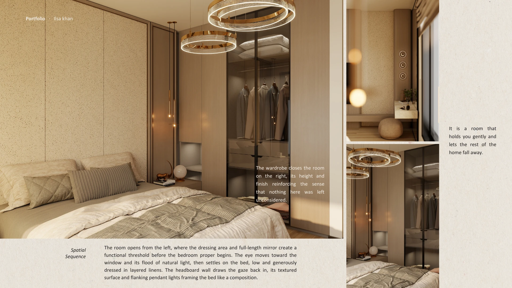

Ilsa KhanFounder & Creative Director
Ilsa KhanFounder & Creative DirectorLeads concept development, spatial storytelling, material palettes, and the editorial tone of every project.

Ilsa Khan Studio is intentionally small. Every project receives close creative direction, a hands-on material process, and a highly edited eye from concept through installation.
Ilsa KhanFounder & Creative DirectorLeads concept development, spatial storytelling, material palettes, and the editorial tone of every project.
 Design DevelopmentPlanning & Documentation
Design DevelopmentPlanning & DocumentationRefines layouts, joinery studies, and the practical layers that help beautiful ideas perform in everyday life.
Curates furniture, lighting, textiles, and art so the final experience feels complete, warm, and collected.

Ilsa Khan Studio approaches interiors as atmosphere before ornament. The work values proportion, texture, calm contrast, and the emotional memory a room leaves behind.
Whether designing a residence, lounge, or intimate hospitality setting, the studio aims for spaces that feel cinematic yet deeply livable—polished, but never loud.
A simple look at how the studio has grown, from intimate residential work toward a broader portfolio that includes hospitality, styling, and object direction.
The studio begins with a focused residential practice centered on calm, tactile living spaces and bespoke palettes.
Project scope grows to include renovations, furniture studies, and styling collaborations across multiple cities.
Selected hospitality and lounge concepts introduce branding, guest experience, and layered lighting into the studio’s process.
The practice expands into refined interiors, curated collaborations, and more fully integrated spatial identities under Ilsa Khan Studio.
The studio culture values quiet rigor: thoughtful research, respectful collaboration, and a strong preference for restraint over excess.
 ResearchMaterial, place, memory
ResearchMaterial, place, memoryEvery project begins with references, lived patterns, and a close reading of what the space needs to become.

CraftMakers & detailWe work closely with skilled makers and fabricators so details feel resolved, tactile, and quietly luxurious.
 CollaborationClients & specialists
CollaborationClients & specialistsOpen dialogue with clients, consultants, and artists allows the final work to remain personal while staying highly refined.